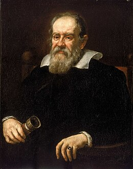

Science Blog
3. Galileo Galilei
Galileo di Vincenzo Bonaiuti de' Galilei (15 February 1564 – 8 January 1642), commonly referred to as Galileo Galilei (/ˌɡælɪˈleɪoʊ ˌɡælɪˈleɪ/ GAL-il-AY-oh GAL-il-AY, US also /ˌɡælɪˈliːoʊ -/ GAL-il-EE-oh -, Italian: [ɡaliˈlɛːo ɡaliˈlɛːi]) or simply Galileo, was an Italian astronomer, physicist and engineer, sometimes described as a polymath.
2. Albert Einstein
Albert Einstein (/ˈaɪnstaɪn/ EYEN-styne;[4] German: [ˈalbɛɐt ˈʔaɪnʃtaɪn] ⓘ; 14 March 1879 – 18 April 1955) was a German-born theoretical physicist who is widely held to be one of the greatest and most influential scientists of all time. Best known for developing the theory of relativity, Einstein also made important contributions to quantum mechanics, and was thus a central figure in the revolutionary reshaping of the scientific understanding of nature that modern physics accomplished in the first decades of the twentieth century.

1. Isaac Newton
Sir Isaac Newton FRS (25 December 1642 – 20 March 1726/27[a]) was an English polymath active as a mathematician, physicist, astronomer, alchemist, theologian, and author who was described in his time as a natural philosopher.